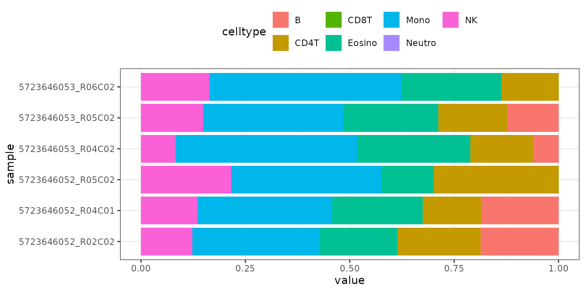
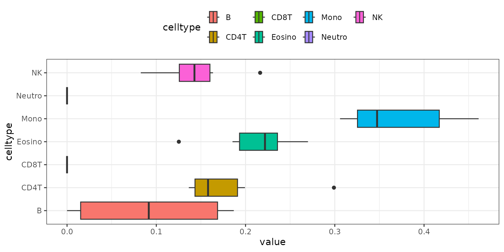
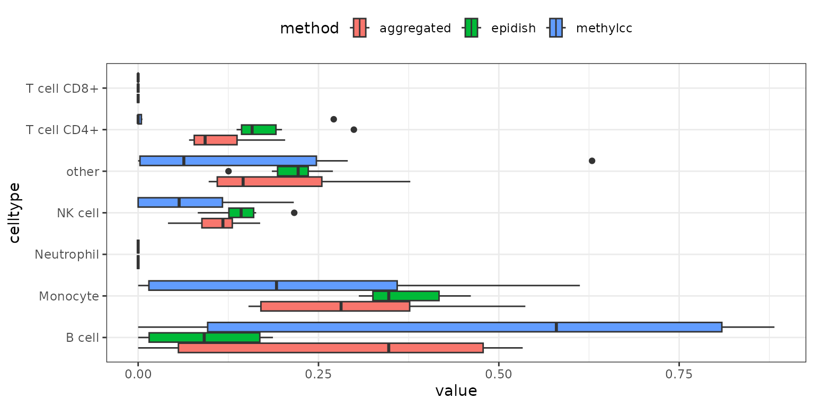

Visualization Options in methyldeconv
methyldeconv provides several functions to visualize the results of cell-type deconvolution analyses. This vignette demonstrates how to use these visualization tools with example data.
Example Data
We’ll use example data from the minfi and
minfiData packages:
## Loading required package: FlowSorted.Blood.450k## Loading required package: minfi## Loading required package: BiocGenerics## Loading required package: generics##
## Attaching package: 'generics'## The following objects are masked from 'package:base':
##
## as.difftime, as.factor, as.ordered, intersect, is.element, setdiff,
## setequal, union##
## Attaching package: 'BiocGenerics'## The following objects are masked from 'package:stats':
##
## IQR, mad, sd, var, xtabs## The following objects are masked from 'package:base':
##
## anyDuplicated, aperm, append, as.data.frame, basename, cbind,
## colnames, dirname, do.call, duplicated, eval, evalq, Filter, Find,
## get, grep, grepl, is.unsorted, lapply, Map, mapply, match, mget,
## order, paste, pmax, pmax.int, pmin, pmin.int, Position, rank,
## rbind, Reduce, rownames, sapply, saveRDS, table, tapply, unique,
## unsplit, which.max, which.min## Loading required package: GenomicRanges## Loading required package: stats4## Loading required package: S4Vectors##
## Attaching package: 'S4Vectors'## The following object is masked from 'package:utils':
##
## findMatches## The following objects are masked from 'package:base':
##
## expand.grid, I, unname## Loading required package: IRanges## Loading required package: GenomeInfoDb## Loading required package: SummarizedExperiment## Loading required package: MatrixGenerics## Loading required package: matrixStats##
## Attaching package: 'MatrixGenerics'## The following objects are masked from 'package:matrixStats':
##
## colAlls, colAnyNAs, colAnys, colAvgsPerRowSet, colCollapse,
## colCounts, colCummaxs, colCummins, colCumprods, colCumsums,
## colDiffs, colIQRDiffs, colIQRs, colLogSumExps, colMadDiffs,
## colMads, colMaxs, colMeans2, colMedians, colMins, colOrderStats,
## colProds, colQuantiles, colRanges, colRanks, colSdDiffs, colSds,
## colSums2, colTabulates, colVarDiffs, colVars, colWeightedMads,
## colWeightedMeans, colWeightedMedians, colWeightedSds,
## colWeightedVars, rowAlls, rowAnyNAs, rowAnys, rowAvgsPerColSet,
## rowCollapse, rowCounts, rowCummaxs, rowCummins, rowCumprods,
## rowCumsums, rowDiffs, rowIQRDiffs, rowIQRs, rowLogSumExps,
## rowMadDiffs, rowMads, rowMaxs, rowMeans2, rowMedians, rowMins,
## rowOrderStats, rowProds, rowQuantiles, rowRanges, rowRanks,
## rowSdDiffs, rowSds, rowSums2, rowTabulates, rowVarDiffs, rowVars,
## rowWeightedMads, rowWeightedMeans, rowWeightedMedians,
## rowWeightedSds, rowWeightedVars## Loading required package: Biobase## Welcome to Bioconductor
##
## Vignettes contain introductory material; view with
## 'browseVignettes()'. To cite Bioconductor, see
## 'citation("Biobase")', and for packages 'citation("pkgname")'.##
## Attaching package: 'Biobase'## The following object is masked from 'package:MatrixGenerics':
##
## rowMedians## The following objects are masked from 'package:matrixStats':
##
## anyMissing, rowMedians## Loading required package: Biostrings## Loading required package: XVector##
## Attaching package: 'Biostrings'## The following object is masked from 'package:base':
##
## strsplit## Loading required package: bumphunter## Loading required package: foreach## Loading required package: iterators## Loading required package: parallel## Loading required package: locfit## locfit 1.5-9.12 2025-03-05## Setting options('download.file.method.GEOquery'='auto')## Setting options('GEOquery.inmemory.gpl'=FALSE)## → checking methyldeconv environment and dependencies## Loading required package: IlluminaHumanMethylation450kmanifest## Loading required package: IlluminaHumanMethylation450kanno.ilmn12.hg19
# Example data
methyl_set <- minfiData::MsetEx
ratio_set <- minfi::ratioConvert(methyl_set)
beta_matrix <- minfi::getBeta(ratio_set)
# Run deconvolution
result <- methyldeconv::deconvolute(methyl_set = methyl_set, method = 'epidish')## Warning in check_input_beta(beta_matrix): 12 NA values detected in your beta
## matrix. Replacing them with 0.5.## RPC was chosen as default for "mode"## blood was chosen as default for "reference"## Starting EpiDISH deconvolution with mode RPC ...
result_multiple <- methyldeconv::deconvolute_combined(methyl_set = methyl_set,
methods = c('epidish','houseman'),
array = '450k')## Warning in check_input_beta(beta_matrix): 12 NA values detected in your beta
## matrix. Replacing them with 0.5.## RPC was chosen as default for "mode"## blood was chosen as default for "reference"## Starting EpiDISH deconvolution with mode RPC ...## 450k was chosen as default for "array"## Blood was chosen as default for "compositeCellType"## IlluminaHumanMethylationEPIC was chosen as default for "referencePlatform"## IDOL was chosen as default for "probeSelect"## [estimateCellCounts2] The function will assume that no preprocessing has been performed. Using 'preprocessQuantile' in prenormalized data is experimental and it should only be run under the user responsibility## Loading required package: FlowSorted.Blood.EPIC## Loading required package: ExperimentHub## Loading required package: AnnotationHub## Loading required package: BiocFileCache## Loading required package: dbplyr##
## Attaching package: 'AnnotationHub'## The following object is masked from 'package:Biobase':
##
## cache## see ?FlowSorted.Blood.EPIC and browseVignettes('FlowSorted.Blood.EPIC') for documentation## loading from cache## Loading required package: IlluminaHumanMethylationEPICmanifest## [convertArray] Casting as IlluminaHumanMethylationEPIC## [estimateCellCounts2] Combining user data with reference (flow sorted) data.## Warning in asMethod(object): NAs introduced by coercion## [estimateCellCounts2] Processing user and reference data together.## [preprocessQuantile] Mapping to genome.## Loading required package: IlluminaHumanMethylationEPICanno.ilm10b4.hg19##
## Attaching package: 'IlluminaHumanMethylationEPICanno.ilm10b4.hg19'## The following objects are masked from 'package:IlluminaHumanMethylation450kanno.ilmn12.hg19':
##
## Islands.UCSC, Locations, Manifest, Other, SNPs.132CommonSingle,
## SNPs.135CommonSingle, SNPs.137CommonSingle, SNPs.138CommonSingle,
## SNPs.141CommonSingle, SNPs.142CommonSingle, SNPs.144CommonSingle,
## SNPs.146CommonSingle, SNPs.147CommonSingle, SNPs.Illumina## [preprocessQuantile] Fixing outliers.## [preprocessQuantile] Quantile normalizing.## [estimateCellCounts2] Using IDOL L-DMR probes for composition estimation.## [estimateCellCounts2] Estimating proportion composition (prop), if you provide cellcounts those will be provided as counts in the composition estimation.Barplot of Deconvolution Results
The results_barplot() function creates a barplot for
each sample, showing the estimated cell-type fractions:
methyldeconv::results_barplot(result)
Boxplot of Deconvolution Results
The results_boxplot() function creates a boxplot for
each cell type, summarizing the distribution of estimated fractions
across samples:
methyldeconv::results_boxplot(result)
Aggregated Boxplot for Multiple Methods
If you run multiple methods using
deconvolute_combined(), you can visualize the aggregated
results with results_aggregated_boxplot():
methyldeconv::results_aggregated_boxplot(result_multiple)
These visualization functions help you interpret and compare the
results of different deconvolution methods. For more customization
options, see the function documentation or explore the source code in
the R/visualization.R file.